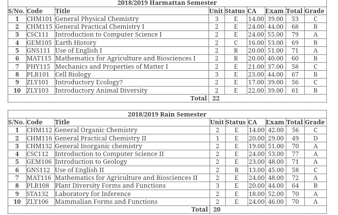
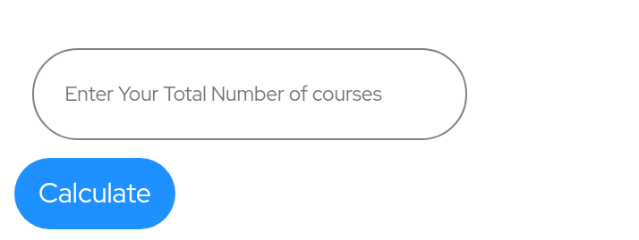
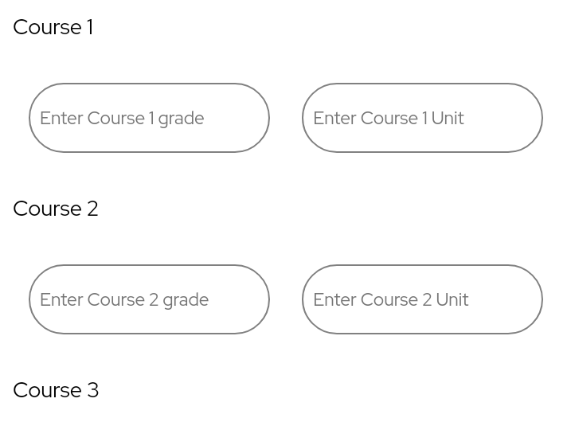

If this is your first time Using MyCgpa Calculator, i recommend Using The App Usage guide
My CGPA calculator has the following features
So, to calculate for any of these, the procedure is all the same and it follows the following steps:
Step1: check your result first from the school portal 
Step2: To calculate on semester basis, either first or second, just count the total number of curses You did for that semester and enter that total number and enter it here👇 
Step3: Now, enter each Course Grade and Units In area provided for that. press calculate after when you might have entered all the required datas correctly. 
Step4:To calculate for a whole seasion or whole Academic year, it follows the same method:
* Count the total number of Courses you did for that season (both in first and second semester all together). and enter it just in Step2 above. then continue with step 3.
* To do the same thing for a whole academic year, count the total number of courses yiu did from the first year till your current year and enter it just as in Step 2 above, continue with step 3
If you didn't get it, please read it again!! it's very straight forward